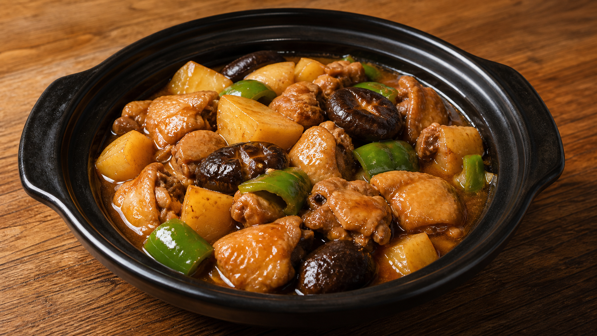
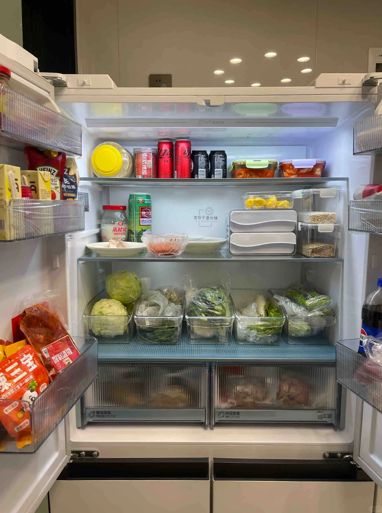
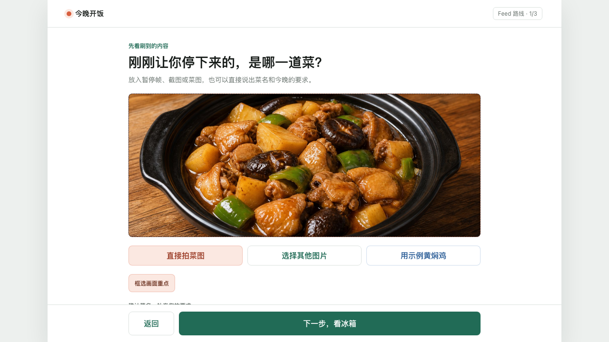
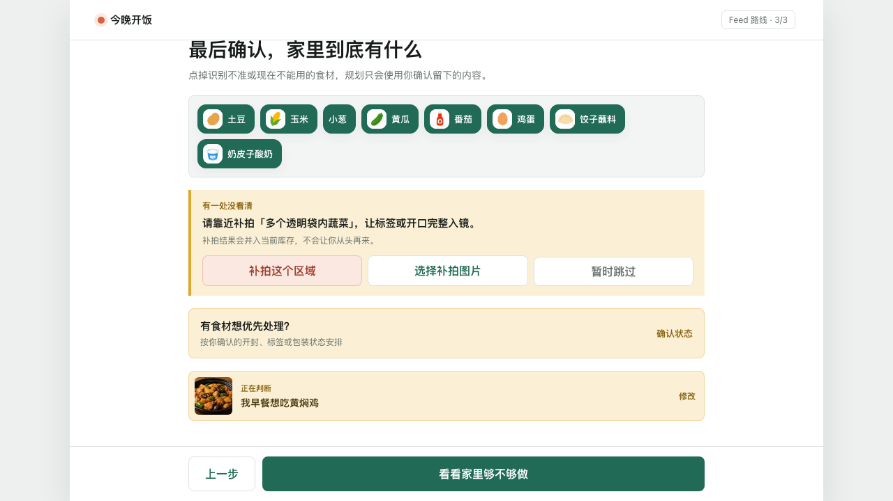
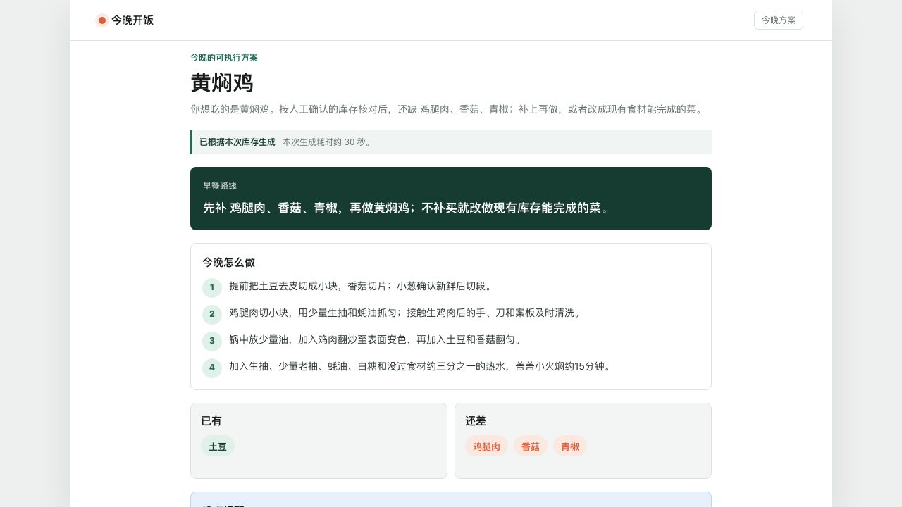
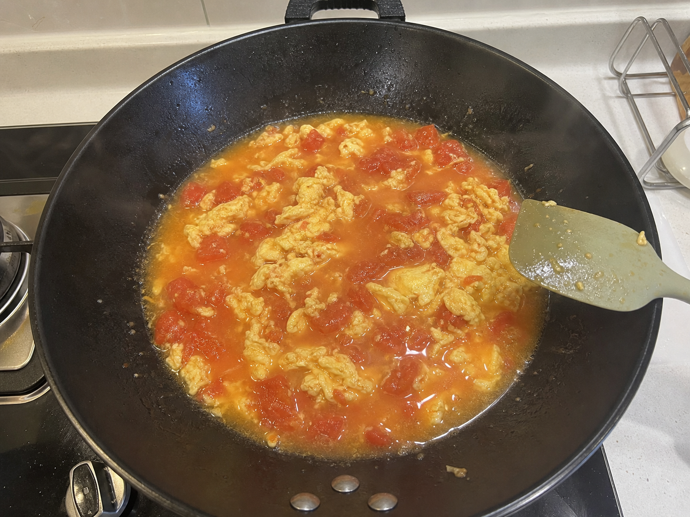

来自抖音 Feed刷到想吃的
视觉 + 语音，所见即所想
菜图 + 冰箱 + 一句话，AI 帮你完成今晚这一餐。


缺关键主料不硬凑；做完还能生成可编辑生活记录。
用户确认始终是链路中的硬步骤

暂停帧、菜图或语音表达目标；菜名与画面重点可修改。

拍冰箱后人工确认可用食材，不把视觉不确定项当成事实。

给出做法、关键缺料、简化路线与必要的商城承接。

过程中的第二次视觉搜索
画面为 AI 生成固定演示素材。真实使用时拍下当前状态，再说一句哪里不对；视觉负责“看见”，语音负责“表达感觉”。
可落地，不靠一张写死页面
算法取舍同样可审计：历史 Case 检索完成真实 A/B/C，小样本未测得质量增益且 token 增加，因此公网实验保持关闭，而不是为了堆技术强行上线。